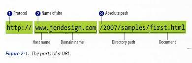

There are two types of File Paths you can use: absolute path and relative path.
An absolute file path uses the complete web address (URL) to specify the location of a resource.
Syntax for absolute paths External websites:You must use an absolute path when linking to resources on other websites.
<a> href="https://www.wikipedia.org">Visit Wikipedia</a>Locally stored files (not recommended): While it's possible to link to a local file on your computer using the file:/// protocol, it will not work for other users and has security restrictions in most browsers.
<a href="file:///C:/Users/YourName/Documents/MyFile.pdf">Open My File</a>Relative paths are considered a best practice for linking to files within the same website because they are more portable. The links will continue to work if you move your site to a different domain.
Syntax for relative paths Same folder: To link to a file in the same directory, just use the filename.